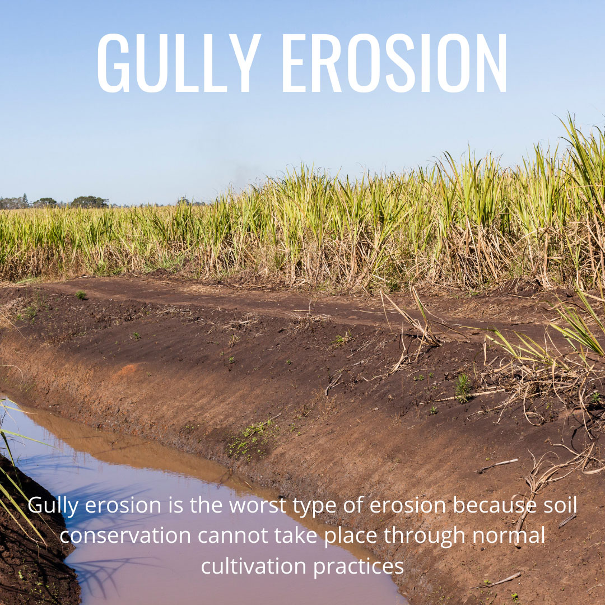

Gully Erosion
Gully erosion represents one of the most severe forms of soil erosion, characterized by the formation of deep and steep-sided channels that cut into the landscape. These channels, known as gullies, can range in size from small incisions to large, canyon-like features, and they result from the concentrated flow of water over the land surface.
Here's a detailed overview of gully erosion:
Process: Gully erosion occurs when water runoff concentrates in specific areas, gradually eroding and deepening the soil to form distinct channels. It typically begins as rill erosion, where small channels form due to the concentrated flow of water. Over time, these channels can enlarge and deepen, eventually evolving into gullies as the erosive forces of water continue to erode the soil and carve out the landscape.
Factors Influencing Gully Erosion:
- Slope Gradient: Steep slopes increase the velocity and erosive power of water runoff, making them more susceptible to gully erosion. However, gully erosion can also occur on gentler slopes under certain conditions, such as prolonged or intense rainfall events.
- Soil Properties: Soil characteristics, including texture, structure, permeability, and compaction, influence its susceptibility to gully erosion. Fine-textured soils with poor infiltration capacity are particularly vulnerable to erosion.
- Vegetative Cover: Vegetation plays a crucial role in reducing gully erosion by intercepting rainfall, stabilizing soil with root systems, and slowing down surface flow. Loss of vegetation, either due to land clearing or overgrazing, can increase erosion risk.
- Geological Factors: Geological features such as underlying rock formations, soil parent material, and landform morphology can influence the formation and development of gullies.
- Significant Soil Loss: Gully erosion results in the rapid removal of large volumes of soil from the landscape, leading to the loss of fertile topsoil and reducing land productivity.
- Infrastructure Damage: Gullies can pose risks to infrastructure such as roads, bridges, and buildings, as they undermine the stability of surrounding land and structures.
- Land Degradation: The formation of gullies can degrade the quality of land and natural habitats, altering landscape morphology, increasing sedimentation in water bodies, and disrupting ecosystem functions.
- Implementing soil conservation practices such as terracing, contour plowing, and the construction of check dams or retaining walls to intercept and slow down water flow, reducing erosion intensity.
- Restoring vegetation through reforestation, grass seeding, cover cropping, and the establishment of riparian buffers to stabilize soil, enhance infiltration, and reduce surface runoff.
- Managing surface water flow through the design and maintenance of drainage systems, grass waterways, and erosion control structures to redirect runoff and minimize gully formation.
By addressing the underlying factors contributing to gully erosion and implementing appropriate erosion control measures, land managers can mitigate soil loss, protect infrastructure and livelihoods, and preserve environmental resources for future generations.